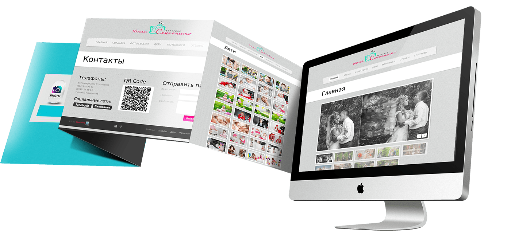

Long-distance cooperation is not a problem for us: many of our clients are located in different regions of Russia! And this does not interfere with communication at all.
Why should I choose ITGALAXY?
First: Unified office - improves communication of employees within the company and clients with managers and specialists.
Second: We have a separate employee responsible for each stage. And they are all in the same office, which improves communication between them.
Third: We have been creating and promoting websites since 2012. During this time, we have completed more than 600 sites and completed more than 800 integration orders!
Fourth: Work with such companies as Yandex, Google, Vkontakte, Baguette, Reg.ru.
Fifth: A personal manager will always be in touch with you throughout the project.
Sixth: We provide technical support to our clients, provide services for regular updating and filling the site with content.
Seventh: An official contract where the obligations of the parties, the cost of services, the order of execution and delivery of work are fixed.